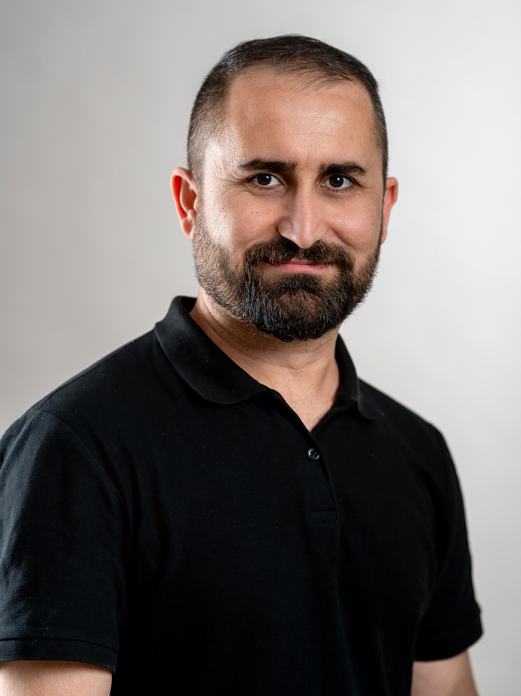

Hallo,



Mein Name ist Musafer Rasho, und ich bin stolz darauf, seit 2021 in Deutschland zu leben. Ursprünglich komme ich aus dem Irak, wo ich Ingenieurwissenschaften mit Schwerpunkt Informatik und Elektrotechnik studiert habe. In Deutschland wurde meinen Abschluss als Ingenieur anerkannt. Ich bin verheiratet und habe einen Sohn. Mein größtes Interesse gilt der Technologiebranche, und ich halte mich gerne über die neuesten Entwicklungen auf dem Laufenden. In meiner Freizeit lese ich gerne Bücher über Mathematik, Elektronik und Programmierung, da ich mich kontinuierlich weiterbilden möchte. Darüber hinaus bin ich ein begeisterter Schwimmer und genieße es, aktiv zu bleiben und neue Herausforderungen anzunehmen. Ich freue mich darauf, meine Fähigkeiten und Leidenschaften in meinem Beruf hier in Deutschland einzubringen und weiterzuentwickeln.